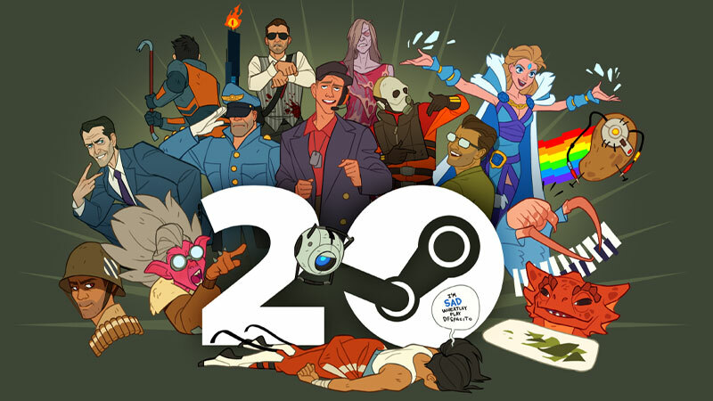

Valve Corporation é uma empresa norte-americana desenvolvedora de jogos eletrônicos e de distribuição digital, com sede em Bellevue, Washington, Estados Unidos.
A Valve foi fundada em 1996 pelos ex-funcionários da Microsoft Gabe Newell e Mike Harrington. Seu jogo de estreia, o jogo de tiro em primeira pessoa (FPS) Half-Life (1998), foi um sucesso comercial e de crítica; com seu realismo, sequências roteirizadas e narrativa perfeita, teve uma influência duradoura no gênero FPS. Harrington saiu em 2000. Em 2003, a Valve lançou a Steam, seguido por Half-Life 2 em 2004. Com sistemas de física avançados e um foco maior na história e nos personagens, Half-Life 2 foi aclamado pela crítica e vendeu 12 milhões de cópias até 2011.
| Ano de Criação | 1996 | ||
|---|---|---|---|
| Plataformas | Computador | PlayStation | Xbox |
| Mais Jogadores | Estados Unidos | Rússia | Corréia do Sul |
CRIADO POR: UNIBRA 3P NOITE - LPW ALUNO: JONATHAN JOSE FELIX XAVIER MAT: 2022252190 PROF: GABRIEL CANDIDO